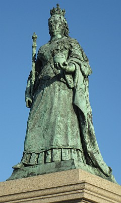

à Portinfé, Saint Ou.
Mardi au sé.
Moussieu l'Editeu,
Chein qu'j'ai à dithe du temps agniet ch'est que je n'l'aime pas. Nou-s-a tréjous dit que les vents d'est ne sont bouones pour les gens ni les bestieaux, mais nou peut dithe chonna étout du temps que j'avons yeu agniet. J'ai sorti pour tchiques minutes d'vant dîné, et j'ai attrapé du fraid dans l'héthêque du dos. La Merrienne m'a frotté avec de l'huile de lîn, et j'ai mînt mes pids dans d'l'ieau caude, avec d'la moutarde, car ch'est un r'miède que ma bouonnefemme de mèthe avait tréjous r'quemandé. Il est à espéther, Moussieu, que quand l'temps r'êcaûf'tha j'me trouv'thai en miyeu santé, car, pour dithe vrai, un homme se lâsse quand il est forchi de rester par dedans le long des jours.

J'avions liut avec grand pliaisi que y'avait hardi d'oppôsition au projet d'bouogi la statue d'la statue d'la Reine Victoria de ouêsqu'oulle est et d'la mettre nou n'sait pas iou. I' n'y a pas doute qu'les lettres à la gâzette ont fait l'Comité d'la D'fense de l'Ile changi d'opinion sus chu sujet-là.
I' pathaît que y'a des fermiers tchi sont en faveur de dêcôner les bêtes. Eh bein, Moussieu, quant à mé, j'si absolûment contre. Un boeu, une vaque, une g'niche sans cônes ne s'saient pas des bêtes Jêrriaises mais des bêtes êtrangièthes. J'si persuadé que la grande mâjorité des membres de la Société Royale sont d'avec mé là.
Quand à l's affaithe politiques j'n'si pas pûs savant que je n'tais y'a tchînze jours, et ch'est qu'à la Trin'té le Charles Cabot et l'Edgar Mouothant sont seux de s'trouver en oppôsition, et que la mâjorité d'autchun côté ne s'sa pas grande. J'ai consulté trais Trin'tais, et i' n'y en avait pas yun tchéthait voulu gagi une pièche d'êtchu sûs autchun des deux. J'ai veu, dans man temps, pûs d'une raide élection à la Trin'té et j'ai connu plusieurs Connêtablyes et Députés. J'me r'souveins même d'la bordée quand l'Alfred Messervy battit le Ph'lip Le Vêsconte, ayant le jour de l'élection, enfreumé une bouonne doûzaine de braves citoyens dans un sohyi ayant, au préalable, prînt la précaution d'les soûler pour faithe seux qu'i' n'se trouv'thaient pas à la Salle Parouaîssiale en temps pour voter. Tout ch'que l'parti perdant r'grettait ch'tait d'n'aver pas pensé à l'faithe yeux-mêmes.
J'espèthe, Moussieu, que la s'maine tchi veint j'éthais tchiquechose de pûs intérrêssant à vos raconter, mais dans l'entretemps j'm'en vais m'couochi, car j'si un mio lâssé, et quand nou-s-est souos les lîncheurs nou-s-a l'temps de réfléchi sûs bein des choses, et d'former de nouvelles opinions sûs hardi d'sujets. Ch'est en tchi, ch'est fini pour agniet. À bétôt.
Ph'lip
Evening Post 20/2/1964
Viyiz étout: